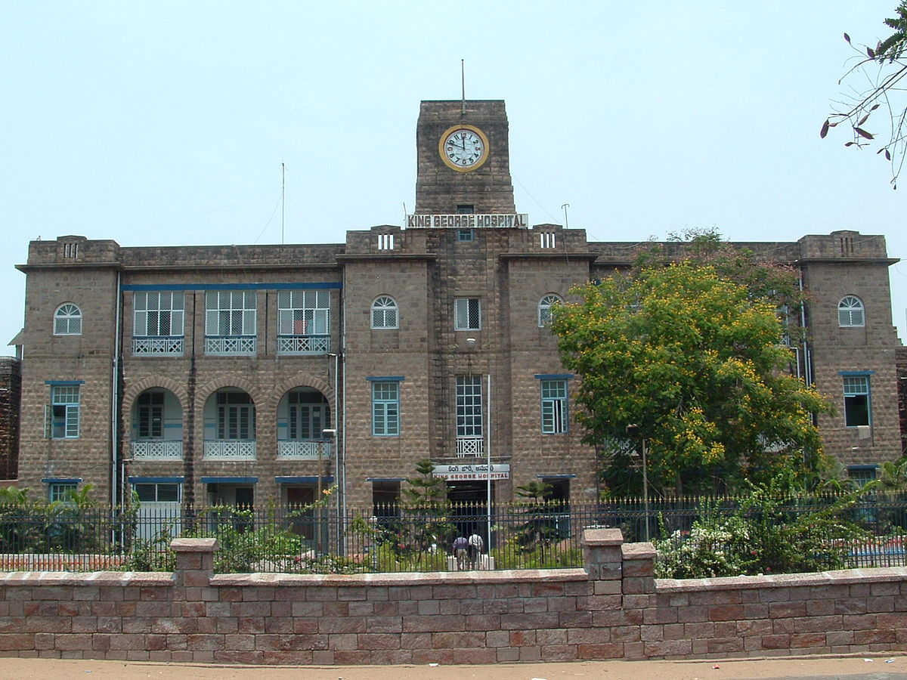
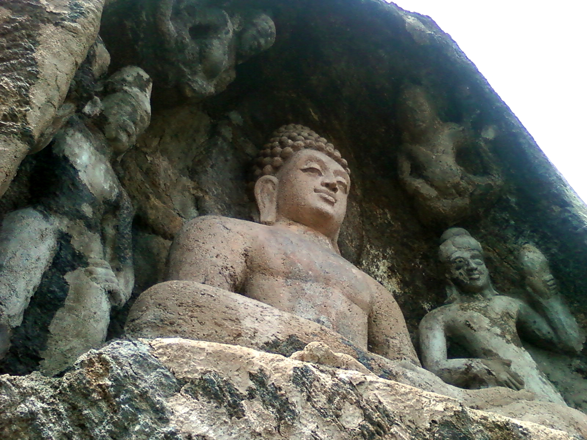
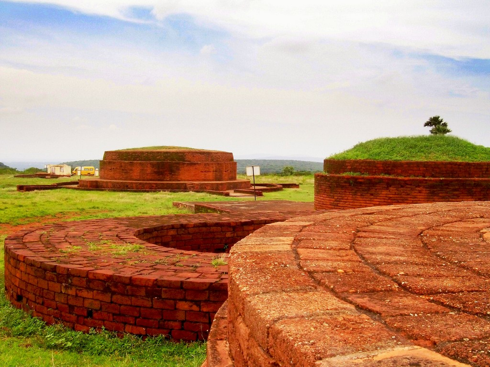
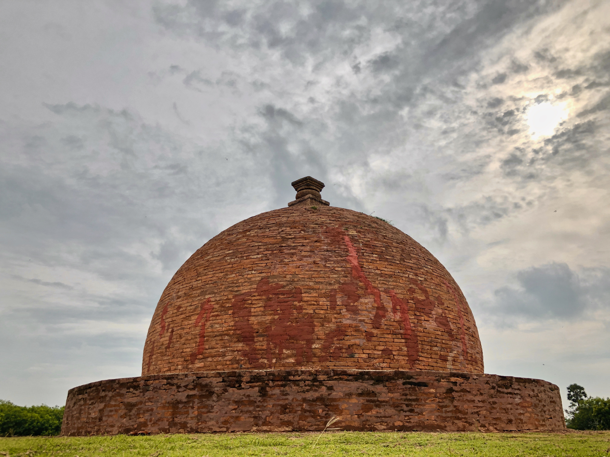
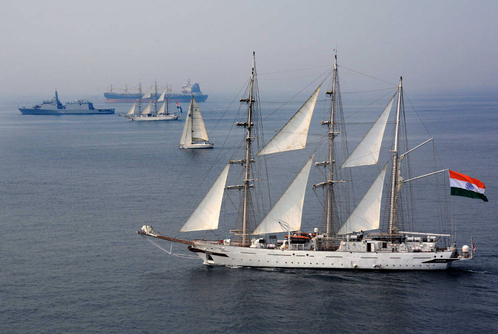

Do you know?!
First train
The First Train from Visakhapatnam started on 1st Oct 1894. At starting our Vizag railway station used to be at one town near Old post office, behind the Laxmitakies. Later in 1968 to present location and it used to call Waltair
railway station. Later around 1987 Mr. D.V Subbarao Mayor of Visakhapatnam at time changed the name as Visakhapatnam. The famous trains likes Howrah-Madras mail used to via Visakhapatnam in 1900 itself. more..
Vizagapatam Town Station
At a time when the railways authorities are all set to celebrate the completion of 125 years of the passage of the first goods train and first passenger train through Waltair station (present Visakhapatnam junction) on Saturday,
the Vizagapatam Town Station near the Lakshmi Talkies in the Old Town area has triggered a wave of nostalgia among the generation that has seen the defunct facility in its prime. more..
King George Hospital-Vizag
King George Hospital (shortly KGH) is a Government General Hospital located in Visakhapatnam, Andhra Pradesh, India. It is the largest and busiest government hospital in Andhra Pradesh. The hospital served the needs of north
coastal Andhra Pradesh and adjacent Orissa for more than 150 years. more..
Old pictures
First Train
The famous trains likes Howrah-Madras mail used to via Visakhapatnam
Train Station
Vizagapatam Town Station near the Lakshmi Talkies

King George Hospital
Government General Hospital for more than 150 years
Buddhism in vizag
In 1907 British archaeologist Alexander Rea unearthed Sankaram, a 2,000-year-old Buddhist site. The name "Śankaram" derives from the Sangharama (temple or monastery). Located 40 km (25 mi) south of Visakhapatnam, it is known locally as
Bojjannakonda and is a significant Buddhist site in Andhra Pradesh. The three major schools of Buddhism (Hinayana, Mahayana and Vajrayana) flourished here. The complex is known for its monolithic stupas, rock-cut caves and brick structures. The
primary stupa was initially carved out of rock and covered with bricks. Excavations yielded historic pottery and Satavahana coins from the first century AD. At Lingalakonda, there are also rock-cut monolithic stupas in rows spread over the
hill. The vihara was active for about 1,000 years.[citation needed]
Nearby is another Buddhist site, Bojjannakonda, with a number of images of the Buddha carved on the rock face of the caves. At Ligalametta there are hundreds of rock-cut monolithic stupas in rows, spread across the hill. Among other Buddhist
attractions are a relic casket, three chaitya halls, votive platforms, stupas and Vajrayana sculptures. more..

Bavikonda is an important Buddhist heritage site located on a hill about 15 km, northeast from Visakhapatnam city. Here the Buddhist habitation is noticed on a 16 ha flat terraced area. The Hinayana school of Buddhism was practised at the
monastery between the 3rd century B.C. and the 3rd century A.D. Bavikonda has remains of an entire Buddhist complex, comprising 26 structures belonging to three phases. A piece of bone stored in an urn recovered here is believed to belong to
the mortal remains of the Buddha. The word Bavikonda in Telugu means "a hill of wells". Fitting its name, Bavikonda is a hill with wells for the collection of rainwater. It is located 15 km (9.3 mi) from Visakhapatnam and is a significant
Buddhist site. Excavation carried out from 1982 to 1987 revealed a Buddhist establishment including a mahachaitya embedded with relic caskets,[clarification needed] a large vihara complex, numerous votive stupas, a stone-pillared congregation
and rectangular halls and a refectory. Artifacts recovered from the site include Roman and Satavahana coins and pottery dating from the third century BC to the second century AD. A significant finding was a piece of bone (with a large quantity
of ash) in an urn, which is believed to be the remains of the Buddha. The Bavikonda site is considered one of the oldest Buddhist sites in Asia. It is a reminder of the Buddhist civilisation which once existed in southern India, and also
reminiscent of Borobudur in Indonesia. more..

About 16 km (9.9 mi) from Visakhapatnam is Thotlakonda, a Buddhist complex situated on top of a hill. The Buddhist complex on the Mangamaripeta hilltop, locally known as Totlakonda, lies about 16 km from Visakhapatnam on Visakhapatnam-Bheemili
Beach Road. After its discovery (during an aerial survey), the Government of Andhra Pradesh declared the 48 ha site as a protected monument in 1978. Excavations in 1988 to 1992 exposed structural remains and artefacts, classified as Religious,
Secular and Civil. These structures include the Stupa, Chaityagrihas, pillared congregation halls, bhandagaras, refectory (bhojanasala), drainage and stone pathways. The site covers an area of 120 acres (49 hectares), and has been declared a
protected area by the government of Andhra Pradesh. Excavations have revealed three kinds of structural remains: religious, secular and civil. Structures include a mahastupa, sixteen votive stupas, a stone-pillared congregation hall, eleven
rock-cut cisterns, well-paved stone pathways, an apsidal chaitya-griha, three round chaitgya-grihas, two votive platforms, ten viharas and a kitchen complex with three halls and a refectory (dining hall). Apart from the structures, Buddhist
treasures excavated include nine Satavahana and five Roman silver coins, terracotta tiles, stucco decorative pieces, sculptured panels, miniature stupa models in stone, Buddha padas depicted with ashtamangala symbols (i.e. the eight auspicious
symbols of Swastika, Shrivasta, Nandhyavarta, Vardhamanaka, Bhadrasana, Kalasha, Minyugala and Darpan) and early pottery. more..

International Fleet-2016

Tall ships sail in company during IFR 2016
Passage exercise (PASSEX) in the Bay of Bengal, 9 February 2016

MIG 29k in Action
Previous
Next
International Fleet Review 2016 (IFR 2016) was an international maritime exercise hosted and conducted by the Indian Navy on behalf of the President of India in February 2016 to improve relations with other navies in the region. The Indian Navy demonstrated its maritime capabilities to the foreign navies participating in the review.
A fleet review is a gathering of naval ships for observation by a reigning monarch or their representative. In Indian events, the President of India reviews the fleet of the Indian Navy. Past fleet reviews in India include a 2006 review conducted by president A. P. J. Abdul Kalam, the first public naval fleet review outside Mumbai.
Two other notable international fleet reviews were held before 2016: the International Fleet Review 2005 in the United Kingdom and the International Fleet Review 2013 in Australia. IFR 2016 was the second international fleet review conducted in India; the first, in Mumbai in 2001, had 29 participants. A total of 95 warships from 50 navies, including the Indian Navy, participated in IFR 2016.The review, conducted from 4 to 8 February 2016 in Visakhapatnam, was organized by the Eastern Naval Command of the Indian Navy. more..